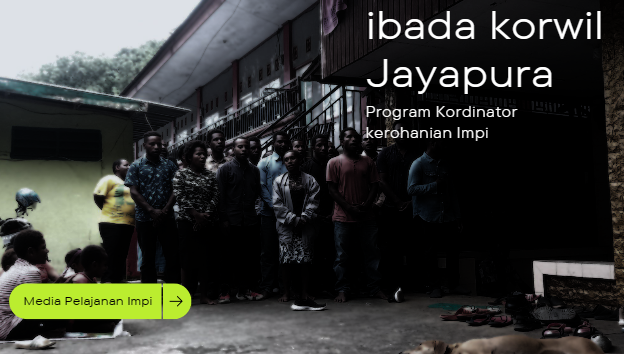

Tentang
Aset yang sangat berharga dalam sebuah organisasi Ikatan ILU . Terkadang, menunjukkan apresiasi dan terima kasih untuk kontribusi dan kerja keras Mahasiswa/i asal ikatan ilu merupakan hal yang dapat meningkatkan. kita dapat dengan mudah belajar dalam organisasi ikatan ilu .

Program Kerohanian IMPI
Program Bindan Kerohanian Iakatan Ilu, Diumumkan dalam satu bulan minggu akhir kita akan Ibada
| No | Jadwal | Korwil |
|---|---|---|
| 1 | Abe | Minggu Akir 1 |
| 2 | Waena | Minggu Akir 2 |
| 3 | Sentani | Minggu Akir 3 |
| 3 | Jayapura | Minggu Akir 4 |

Program BP Impi
Visi Misi Badang Penghurus Ikatan Mahasiswa/i Pelajar Ilu Siap adakan Natal Ikatan. Inilah yang membuat Mahasiswa/i sala satu mencari dana untuk mensukseskan kegiatan, ulang tahun IMPI yang ke 17 tahun 2023.